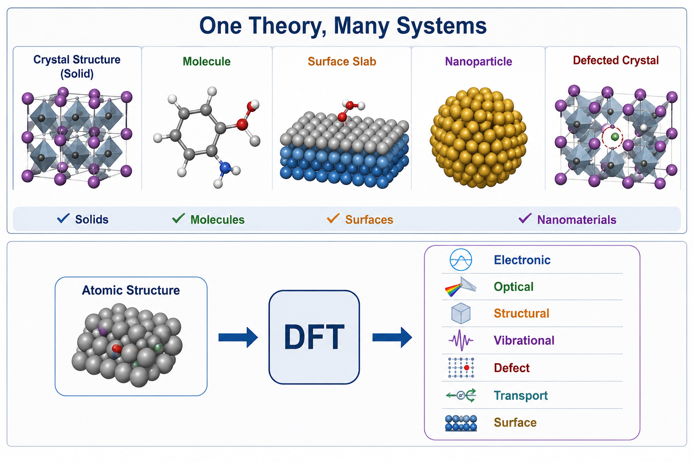
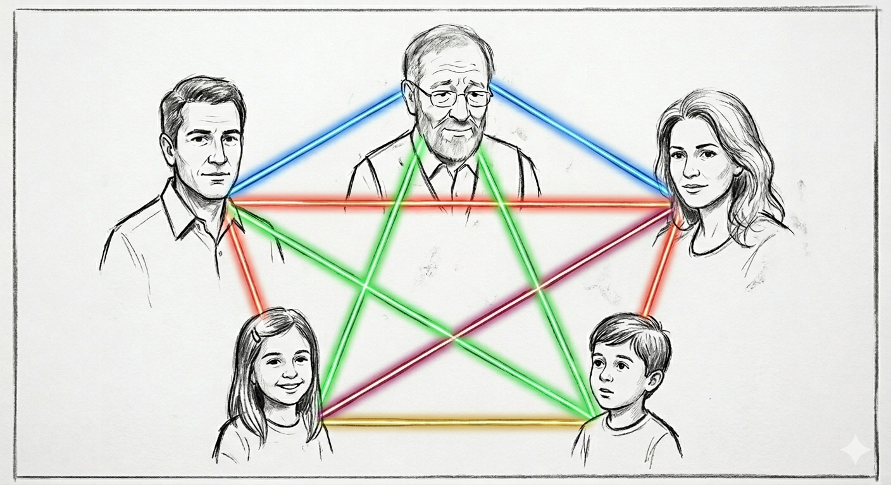
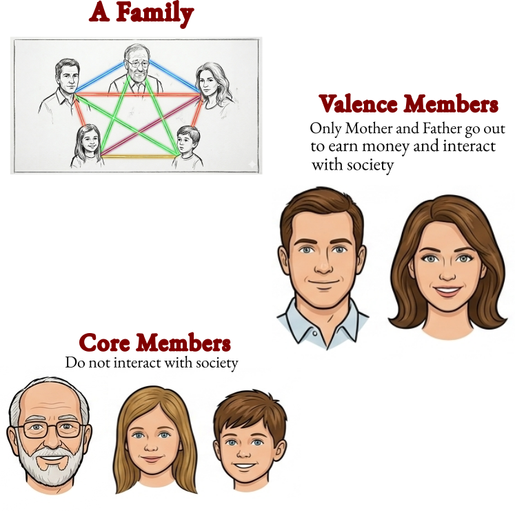

DFT - A Workhorse of Computational Materials Science
DFT provides a practical balance between accuracy and computational cost, making quantum-mechanical simulations possible for real materials. Wavefunction methods try to track every interaction, while DFT focuses on the electron density, making the problem much more manageable.
✔ Quantum mechanical description of materials
✔ Reasonably accurate for many properties
✔ Applicable to solids, molecules, surfaces, and nanomaterials
✔ Can predict properties before experiments e..g, energy of the system, dielectric coefficient, adsorption spectra, adsorption energy, phonons, defect concentration, defect stability etc.
✔ Scales to hundreds of atoms
✔ Large ecosystem of software and databases

WHAT IS DFT?
DFT solves Many Body Problem

But How?
By Solving Schrodinger equation - a fundamental equation governing the behavior and evolution of quantum particles:
Is it practical to consider each electron in a system?
Density Functional Theory (DFT) uses the electron density as the central quantity to determine and predict all physical and chemical properties of a material.
\[
\text{Total electron density} = \text{core} + \text{valence}
\]

Hands-On
DFT Steps
Step 1 - Convergence
Energy Cut-off
k-points
Step 2 - Structure Relaxation
Atomic positions
Both atomic positions and lattice
Step 3 - Self Consistent Field Calculations
An SCF calculation is performed to determine the electronic ground state of a material for a given atomic structure. During the SCF process, the electron density is updated iteratively until a self-consistent solution is achieved, where the input and output electron densities become nearly identical. The converged SCF calculation provides accurate total energy, charge density, and other electronic properties that serve as the basis for further analysis.
Step 4 - Calculation of Physical Properties
The final DFT electronic structure serves as the foundation for calculating various material properties, including band structures, density of states, optical absorption spectra, dielectric response, thermoelectric transport coefficients, adsorption energies, and catalytic reaction energetics.
Open the MoS\(_2\) cif file. (OR Download cif file of MoS\(_2\) from Materials Project.)
Open VESTA.
Import cif file of MoS\(_2\).
Explore tools in VESTA.
Create supercell.
How to generate a structure using VESTA.
Generate and Understand QE Input File
Steps to Follow:
Generate QE input file using Materials Cloud
Go to Materials Cloud website -> QE input generator -> upload cif file
Description of QE Input File
&CONTROL ! CONTROL namelist: defines the type of calculation and file management settings calculation = 'scf' ! Type of calculation: self-consistent field (ground-state charge density) restart_mode = 'from_scratch' ! Start a new calculation instead of restarting a previous one pseudo_dir = '../pseudo/' ! Directory containing pseudopotential files (.UPF) outdir = '../tmp/' ! Directory where temporary files and wavefunctions are stored prefix = 'gr' ! Prefix used to name all output files/&SYSTEM ! SYSTEM namelist: defines the crystal structure, atoms, and computational parameters ibrav = 4 ! Hexagonal Bravais lattice (graphene unit cell) a = 2.4623 ! Lattice parameter a in Angstrom c = 10 ! Cell height in Angstrom (includes vacuum along z-direction) nat = 2 ! Number of atoms in the unit cell ntyp = 1 ! Number of atomic species (only carbon) occupations = 'smearing' ! Occupation method; useful for metals and semi-metals smearing = 'mv' ! Marzari-Vanderbilt (cold) smearing scheme degauss = 0.02 ! Smearing width in Ry ecutwfc = 60 ! Plane-wave kinetic energy cutoff in Ry/&ELECTRONS ! ELECTRONS namelist: controls the SCF procedure and electronic convergence settings mixing_beta = 0.7 ! Charge-density mixing factor used during SCF convergence/ATOMIC_SPECIES ! Card listing each atomic species, its atomic mass, and pseudopotential fileC 12.0107 C.pbe-n-rrkjus_psl.0.1.UPF ! Element, atomic mass, and pseudopotential fileATOMIC_POSITIONS (crystal) ! Card specifying atomic positions in fractional (crystal) coordinatesC 0.333333333 0.666666666 0.500000000 ! Carbon atom 1 in fractional (crystal) coordinatesC 0.666666666 0.333333333 0.500000000 ! Carbon atom 2 in fractional (crystal) coordinatesK_POINTS (automatic) ! Card defining the Brillouin zone sampling using an automatic k-point mesh12 12 1 0 0 0 ! 12×12×1 Monkhorst-Pack k-point mesh with no shifts
```
Convergence Tests
Steps to Follow:
Go to the fodler.
Perform multiple SCF calculations at different ecutwfc values.
Perform multiple SCF calculations at different k-point values.
Plot energy vs ecutefc and energy vs k-points.
Plot them
Check converged value
Structure Relaxation
Steps to Follow:
Go to the relaxation folder.
First copy and paste the converged values of ecutwfc and k-points in the relaxation input file.
Change the calcualtion to relax to optimize atomic positions only or vc-relax to optimize both atomic positions and lattice parameters.
Run the calculation on the terminal:
mpirun -np 2 pw.x -i vc-relax.in > vcrelax.out
Self-Consistent Field (SCF) Calculation
Steps to Follow:
Go to the folder SCF
Put the relaxed lattice parameters and atomic positions from relax.out file into scf.in file.
Run the command on terminal:
Bands
Band Structure Calculation (Quantum ESPRESSO)
After obtaining a converged SCF charge density, the electronic band structure is calculated to understand how the energy of electrons varies with momentum (k-points) in the material. In Quantum ESPRESSO, this is typically done in two steps. First, a non-self-consistent field (NSCF) calculation is performed along a chosen high-symmetry k-point path using the fixed charge density from the SCF step. This provides eigenvalues at the required k-points without updating the charge density. Next, a post-processing step using bands.x is used to organize and extract the eigenvalues to generate the final band structure plot. This workflow allows efficient and accurate visualization of the electronic structure of the material.
Steps to Follow:
Go to the folder
Open the bands_nscf.in file.
Make sure that Calculation \(=\) bands is set.
Run the command on the terminal:
Bands Post Processing:
In the same folder, open the file bands.in.
Check everything is correct.
Run the command on the terminal:
NSCF
An NSCF calculation is performed using a fixed charge density obtained from a previously converged SCF calculation. In this step, the electronic wavefunctions and eigenvalues are recalculated at a chosen set of k-points without updating the charge density, making it computationally cheaper than an SCF calculation. NSCF is mainly used when a denser or specially chosen k-point mesh is required for post-processing tasks such as density of states (DOS) or band structure calculations.
Steps to Follow:
Go to the folder.
Make sure the Calculation \(=\) nscf is set.
Run the command on the terminal:
DOS/PDOS
Density of States (DOS) and Projected DOS (PDOS)
The Density of States (DOS) describes how many electronic states are available at each energy level in a material, helping us understand its electronic behavior, such as whether it is metallic, semiconducting, or insulating. After performing a converged SCF calculation, a denser k-point sampling is used in an NSCF calculation to obtain accurate energy eigenvalues. These results are then processed to compute the DOS. The Projected Density of States (PDOS) further decomposes the DOS into contributions from specific atoms or orbitals, allowing us to understand which elements and orbitals dominate the electronic structure near the Fermi level.
Steps to Follow:
Optical Properties
Density of States (DOS) and Projected DOS (PDOS)
The Density of States (DOS) describes how many electronic states are available at each energy level in a material, helping us understand its electronic behavior, such as whether it is metallic, semiconducting, or insulating. After performing a converged SCF calculation, a denser k-point sampling is used in an NSCF calculation to obtain accurate energy eigenvalues. These results are then processed to compute the DOS. The Projected Density of States (PDOS) further decomposes the DOS into contributions from specific atoms or orbitals, allowing us to understand which elements and orbitals dominate the electronic structure near the Fermi level.
Steps to Follow:
Catalysis
Density of States (DOS) and Projected DOS (PDOS)
The Density of States (DOS) describes how many electronic states are available at each energy level in a material, helping us understand its electronic behavior, such as whether it is metallic, semiconducting, or insulating. After performing a converged SCF calculation, a denser k-point sampling is used in an NSCF calculation to obtain accurate energy eigenvalues. These results are then processed to compute the DOS. The Projected Density of States (PDOS) further decomposes the DOS into contributions from specific atoms or orbitals, allowing us to understand which elements and orbitals dominate the electronic structure near the Fermi level.